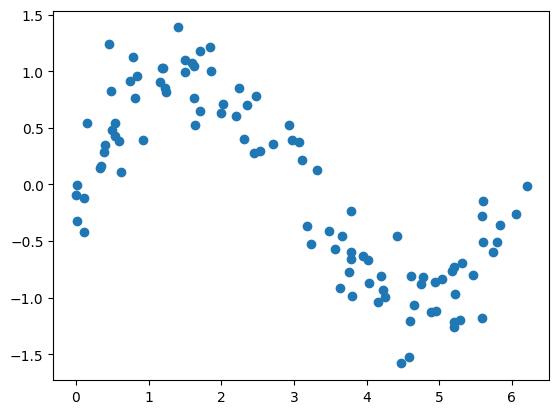
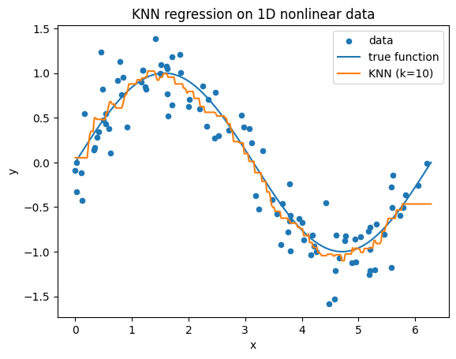
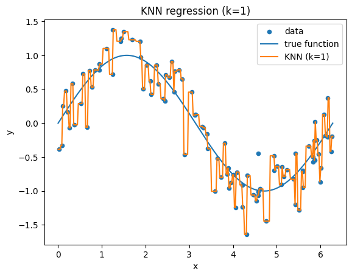
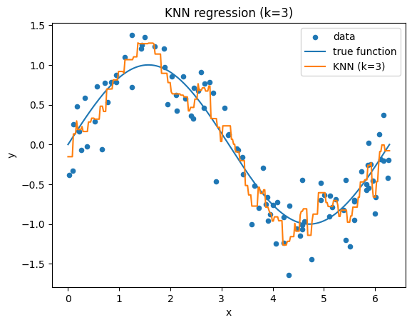
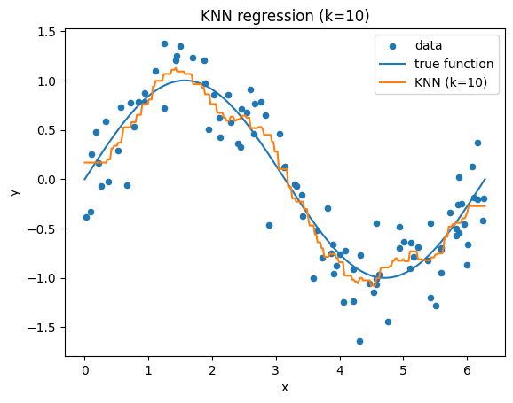
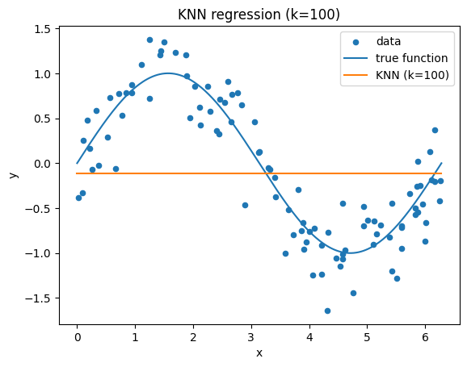
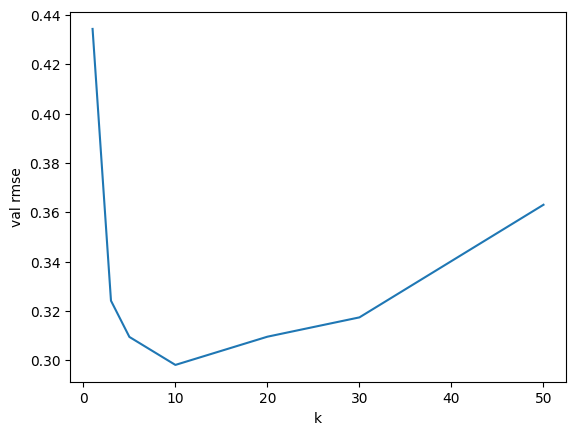
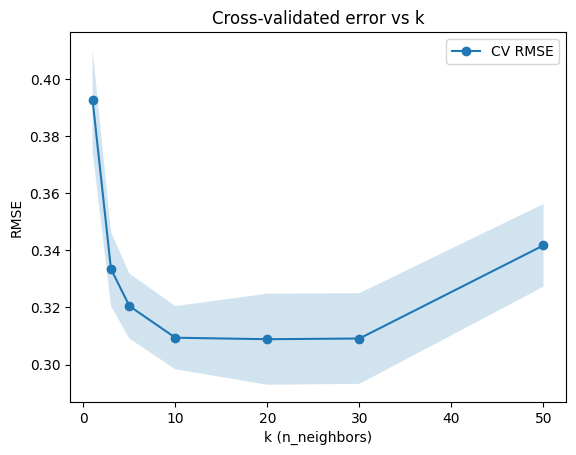
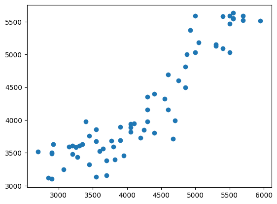
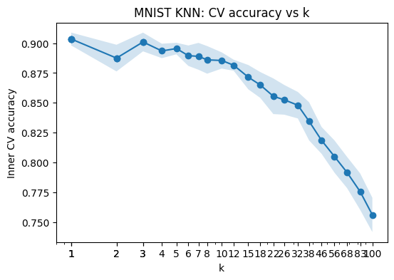

import numpy as np
import matplotlib.pyplot as plt
from sklearn.neighbors import KNeighborsRegressor10 K-Nearest Neighbors
10.1 Population Risk Framework
Recall the supervised learning setup:
- We observe data \((x_1, y_1), \dots, (x_N, y_N) \overset{\text{i.i.d.}}{\sim} P\) where \(x_n\in\mathbb{R}^D\)
- We want to find a good score function \(\hat{s}: \mathbb{R}^D \to \mathbb{R}^K,\) so that \(a(\hat{s}(x)) \approx y\)
- In particular, we measure prediction quality using a loss $ (y, (x)) $
- We define the risk as: \(R(s) = \mathbb{E}_{(x,y) \sim P}[\ell(y, s(x))].\)
- Ideally, we’d find \(s^* = \arg\min_s R(s).\)
10.2 Pointwise Optimization
Let’s see if we can derive what the optimal predictor \(s^*\) actually is. Start from the population risk and apply the law of total expectation (conditioning on \(x\)): \[ R(s) = \mathbb{E}_{x}\big[\mathbb{E}_{y\mid x}[\ell(y,s(x))]\big] \]
This expression is important. It says: - First fix an input \(x\) - Then evaluate how good the prediction \(s(x)\) is on average over \(y\mid x\) - Finally average over all \(x\)
Now the key observation:
- For each fixed \(x\), the quantity \(\mathbb{E}_{y\mid x}[\ell(y,s(x))]\) depends only on the single value \(s(x)\)
- It does not depend on \(s(x')\) for any \(x'\neq x\)
- After all, once we condition on \(x\), the randomness is only over \(y\)
So the risk is an average (over \(x\)) of separate terms, one for each input value. We can write: \[ R(s) = \mathbb{E}_{x}\big[L_x(s(x))\big], \quad \text{where } L_x(t)=\mathbb{E}_{y\mid x}[\ell(y,t)] \]
Now we want to minimize \(R(s)\) over \(s\).
A key point: a function \(s\) is just a collection of choices, one value \(s(x)\) for each input \(x\). If we do not restrict the class of functions, we are free to choose each of these values independently.
You can think of this like:
- For each \(x\), we pick a number \(s(x)\)
- The overall risk is just an average of the costs associated with each of these choices
- Changing \(s(x)\) only affects the term corresponding to that specific \(x\)
- It has no effect on the contribution from any other \(x'\)
So the optimization problem breaks into independent subproblems, one for each \(x\).
Now, why doesn’t the outer expectation over \(x\) change the minimizer? After all, \(R(s) = \mathbb{E}_{x}\big[L_x(s(x))\big]\)
Think of a simpler analogy. Suppose we want to minimize: \[ \int f_x(t(x)) \, p(x)dx \] where for each \(x\), \(f_x(\cdot)\) is some function.
- The integral is just adding up (averaging) contributions from each \(x\)
- If we can choose \(t(x)\) separately for each \(x\), then to minimize the total, we should minimize each term individually
Choosing a suboptimal \(t(x)\) at even a single \(x\) would increase the total, and nothing elsewhere can compensate for it, since the terms do not interact.
Therefore, to minimize the overall expectation \(\mathbb{E}_{x}[L_x(s(x))]\), we minimize each term separately. (Again, the key here is that there is no coupling between different \(s(x)\) since we choose \(s\) among any possible function.)
Concretely, for each fixed \(x\), we choose \(s(x)\) by solving \[ \min_t \; L_x(t) = \min_t \; \mathbb{E}_{y\mid x}[\ell(y,t)] \]
Equivalently, \[ s^*(x)=\arg\min_t\;\mathbb{E}_{y\mid x}[\ell(y,t)] \]
Overall: - For each input \(x\), we solve a local optimization problem - The optimal prediction depends only on the conditional distribution \(P(y\mid x)\) - There is no interaction between different inputs
10.3 Regression with Squared Loss
Now let’s specialize to regression with squared error. In this setting, the score is a single real number, so \(s(x)\in\mathbb{R}\), and the loss is \[ \ell(y,s(x))=(y-s(x))^2 \]
Plugging this into the general pointwise formula gives \[ s^*(x)=\arg\min_t \; \mathbb{E}[(Y-t)^2\mid X=x] \]
So for each fixed input \(x\), we just need to solve an ordinary one-variable optimization problem. The only randomness left is over the conditional distribution of \(Y\mid X=x\).
To make the dependence on \(t\) explicit, expand the square: \[ (Y-t)^2 = Y^2 - 2tY + t^2 \]
Taking conditional expectation given \(X=x\), we get \[ \mathbb{E}[(Y-t)^2\mid X=x]= \mathbb{E}[Y^2\mid X=x] -2t\,\mathbb{E}[Y\mid X=x] +t^2 \]
Differentiate with respect to \(t\): \[ \frac{d}{dt}\mathbb{E}[(Y-t)^2\mid X=x]= -2\mathbb{E}[Y\mid X=x] + 2t \]
Set this equal to zero: \[ -2\mathbb{E}[Y\mid X=x] + 2t = 0 \]
So the minimizer is \[ t=\mathbb{E}[Y\mid X=x] \]
Therefore, \[ s^*(x)=\mathbb{E}[Y\mid X=x] \]
Since the second derivative is \[ \frac{d^2}{dt^2}\mathbb{E}[(Y-t)^2\mid X=x]=2>0, \] this critical point is indeed a minimum.
Interpretation
This result is important conceptually:
- Under squared loss, the optimal prediction at input \(x\) is the conditional mean of \(Y\) given \(X=x\)
- So regression is really the problem of estimating the conditional mean function \[ x \mapsto \mathbb{E}[Y\mid X=x] \]
- If we had many training points with exactly the same input \(x\), the best prediction would just be the average of their responses
Of course, in continuous feature spaces, we usually do not see the exact same input twice. That is what motivates local methods: instead of averaging responses at exactly \(x\), we average responses at points near \(x\).
10.4 The Statistical Problem
We now know what the optimal predictor is under squared loss: \[ s^*(x)=\mathbb{E}[Y\mid X=x] \]
So in principle, the regression problem is solved: if we knew the conditional distribution of \(Y\) given \(X=x\), we would just take its mean.
But this immediately raises a statistical problem. In practice:
- We do not know the underlying distribution \(P\)
- So we do not know the conditional distribution \(P(y\mid x)\)
- Therefore we do not know the conditional mean \(\mathbb{E}[Y\mid X=x]\)
At first glance, one natural idea would be: just look at all training points with \(X_n=x\), and average their corresponding responses \(Y_n\).
That would give the estimate \[ \hat{s}(x)=\frac{1}{|\{n:X_n=x\}|}\sum_{n:X_n=x}Y_n \]
when such points exist.
The problem is that in most regression settings, the input space is continuous. If \(x\in\mathbb{R}^D\), then exact matches are usually rare or nonexistent. Even with a large dataset, we typically will not see many points with \(X_n=x\) exactly.
So although the formula \[ s^*(x)=\mathbb{E}[Y\mid X=x] \] is conceptually clean, it is not directly usable as an estimator.
This leads to the next question:
- If we cannot average over points with exactly \(X_n=x\), what should we average over instead?
10.5 Local Approximation Principle
The key idea is to replace exact conditioning with approximate conditioning.
Instead of asking for points with \[ X_n=x, \] we look for points with \[ X_n\approx x \] that is, points whose features are close to the query point \(x\).
Why should this make sense? The intuition is that if \(x_n\) is close to \(x\), then the conditional behavior of \(Y\) at \(x_n\) should be similar to the conditional behavior of \(Y\) at \(x\). So nearby observations should contain information about \(\mathbb{E}[Y\mid X=x]\).
This suggests the approximation \[ \mathbb{E}[Y\mid X=x] \approx \text{average of the }Y_n\text{ for points }x_n\text{ near }x \]
So the basic strategy is:
- Find training points near \(x\)
- Average their responses
- Use that average as an estimate of the conditional mean at \(x\)
This is the core local idea behind KNN regression.
Another way to phrase it is:
- The population target is a conditional mean
- Since exact conditioning is too hard, we estimate that conditional mean locally from nearby data
10.6 KNN Regression
KNN makes this local approximation idea concrete.
Given a query point \(x\), define its \(k\) nearest neighbors to be the \(k\) training inputs \(x_n\) that are closest to \(x\) according to some distance metric, usually Euclidean distance.
Write the set of their indices as \[ \mathcal{N}_k(x) \]
So \(\mathcal{N}_k(x)\) contains the indices of the \(k\) points in the training set that are nearest to \(x\).
KNN regression predicts by averaging the responses of those neighbors: \[ \hat{s}(x)=\frac{1}{k}\sum_{n\in\mathcal{N}_k(x)}Y_n \]
This is the entire algorithm:
- Compute the distance from \(x\) to every training point
- Find the \(k\) closest ones
- Average their \(Y_n\) values
10.6.1 Comparison to Linear Regression
Linear regression: - Assumes a parametric model for the conditional mean \[ \mathbb{E}[Y\mid X=x] \approx w^\top x \] - Produces predictions \(s(x)\) using a global linear function
KNN: - Estimates the conditional mean locally \[ \mathbb{E}[Y\mid X=x] \approx \frac{1}{k}\sum_{n\in\mathcal{N}_k(x)} Y_n \] - Produces predictions by averaging nearby responses
Both methods: - aim to approximate the same target \[ s^*(x)=\mathbb{E}[Y\mid X=x] \] - differ in how they estimate it: - linear regression uses a global parametric form - KNN uses a local, data-driven average
11 Code for KNNRegresion
We can fit knn regression with KNeighborsRegressor
11.1 Simulated Data
First lets consider this on simulated data.
rng = np.random.default_rng()
# Simulate 1D data
n = 100
X = np.sort(2 * np.pi * rng.random(n)) # x in [0, 2π]
y = np.sin(X) + 0.3 * rng.standard_normal(n) # nonlinear + noise
# Reshape for sklearn (n_samples, n_features)
X = X.reshape(-1, 1)plt.scatter(X,y)
Here k controls the number of neighbors:
# Fit KNN regression
k = 10
knn = KNeighborsRegressor(n_neighbors=k)
knn.fit(X, y)KNeighborsRegressor(n_neighbors=10)In a Jupyter environment, please rerun this cell to show the HTML representation or trust the notebook.
On GitHub, the HTML representation is unable to render, please try loading this page with nbviewer.org.
Parameters
# Predictions on a grid
X_grid = np.linspace(0, 2 * np.pi, 300).reshape(-1, 1)
y_pred = knn.predict(X_grid)
# Plot
plt.figure()
plt.scatter(X, y, s=20, label="data")
plt.plot(X_grid, np.sin(X_grid), label="true function") # underlying signal
plt.plot(X_grid, y_pred, label=f"KNN (k={k})")
plt.legend()
plt.xlabel("x")
plt.ylabel("y")
plt.title("KNN regression on 1D nonlinear data")
plt.show()
Lets wrap this up as a function to play with k:
def plot_knn_1d(k=10, n=100, noise=0.3, seed=0):
rng = np.random.default_rng(seed)
# Simulate data
X = np.sort(2 * np.pi * rng.random(n))
y = np.sin(X) + noise * rng.standard_normal(n)
X = X.reshape(-1, 1)
# Fit KNN
knn = KNeighborsRegressor(n_neighbors=k)
knn.fit(X, y)
# Prediction grid
X_grid = np.linspace(0, 2 * np.pi, 300).reshape(-1, 1)
y_pred = knn.predict(X_grid)
# Plot
plt.figure()
plt.scatter(X, y, s=20, label="data")
plt.plot(X_grid, np.sin(X_grid), label="true function")
plt.plot(X_grid, y_pred, label=f"KNN (k={k})")
plt.legend()
plt.xlabel("x")
plt.ylabel("y")
plt.title(f"KNN regression (k={k})")
plt.show()plot_knn_1d(k=1)
plot_knn_1d(k=3)
plot_knn_1d(k=10)
plot_knn_1d(k=50)
plot_knn_1d(k=100)
import ipywidgets as widgets
from ipywidgets import interact
interact(plot_knn_1d, k=widgets.IntSlider(min=1, max=100, step=1, value=10));So the number of neighbors k determins the flexibility of the method.
11.1.1 Tuning Flexibility k
3-way split
from sklearn.model_selection import train_test_split
from sklearn.pipeline import make_pipeline
from sklearn.preprocessing import StandardScaler
from sklearn.metrics import root_mean_squared_error
# Simulated 1D nonlinear regression data
rng = np.random.default_rng()
n = 300
X = np.sort(2 * np.pi * rng.random(n)).reshape(-1, 1)
y = np.sin(X.ravel()) + 0.3 * rng.standard_normal(n)# Split into train / temp, then temp into validation / test
X_train, X_temp, y_train, y_temp = train_test_split(
X, y, test_size=0.4, random_state=0
)
X_val, X_test, y_val, y_test = train_test_split(
X_temp, y_temp, test_size=0.5, random_state=0
)X_train.shape(180, 1)X_val.shape(60, 1)X_test.shape(60, 1)k_grid = [1, 3, 5, 10, 20, 30, 50]
val_rmse = []
for k in k_grid:
model = make_pipeline(
StandardScaler(),
KNeighborsRegressor(n_neighbors=k)
)
model.fit(X_train, y_train)
y_val_pred = model.predict(X_val)
rmse = root_mean_squared_error(y_val, y_val_pred)
val_rmse.append(rmse)plt.plot(k_grid,val_rmse)
plt.xlabel('k')
plt.ylabel('val rmse')
plt.show()
best_k = k_grid[np.argmin(val_rmse)]
print(f"\nBest k from validation set: {best_k}")
print(f"\nval RMSE at best k: {val_rmse[np.argmin(val_rmse)]}")
Best k from validation set: 10
val RMSE at best k: 0.29804950028096716# Refit on train + validation using the chosen k
X_trainval = np.vstack([X_train, X_val])
y_trainval = np.concatenate([y_train, y_val])
final_model = make_pipeline(
StandardScaler(),
KNeighborsRegressor(n_neighbors=best_k)
)
final_model.fit(X_trainval, y_trainval)Pipeline(steps=[('standardscaler', StandardScaler()),
('kneighborsregressor', KNeighborsRegressor(n_neighbors=10))])In a Jupyter environment, please rerun this cell to show the HTML representation or trust the notebook. On GitHub, the HTML representation is unable to render, please try loading this page with nbviewer.org.
Parameters
Parameters
Parameters
# Final one-time test evaluation
y_test_pred = final_model.predict(X_test)
test_rmse = root_mean_squared_error(y_test, y_test_pred)
print(f"Test RMSE: {test_rmse:.4f}")Test RMSE: 0.313811.1.2 Nested CV:
Let’s look at a single inner loop:
from sklearn.model_selection import KFold, GridSearchCV, cross_validate
from sklearn.pipeline import Pipeline
from sklearn.preprocessing import StandardScalerpipe = Pipeline([
("scale", StandardScaler()),
("knn", KNeighborsRegressor())
])
param_grid = {
"knn__n_neighbors": [1, 3, 5, 10, 20, 30, 50],
}
inner_cv = KFold(n_splits=5, shuffle=True)
search = GridSearchCV(
estimator=pipe,
param_grid=param_grid,
cv=inner_cv,
scoring="neg_root_mean_squared_error", # sklearn says higher = better
n_jobs=-1,
refit=True
)# Fit grid search
search.fit(X, y)GridSearchCV(cv=KFold(n_splits=5, random_state=None, shuffle=True),
estimator=Pipeline(steps=[('scale', StandardScaler()),
('knn', KNeighborsRegressor())]),
n_jobs=-1,
param_grid={'knn__n_neighbors': [1, 3, 5, 10, 20, 30, 50]},
scoring='neg_root_mean_squared_error')In a Jupyter environment, please rerun this cell to show the HTML representation or trust the notebook. On GitHub, the HTML representation is unable to render, please try loading this page with nbviewer.org.
Parameters
Parameters
Parameters
search.cv_results_{'mean_fit_time': array([0.00117631, 0.00133653, 0.00130291, 0.00131211, 0.00130081,
0.00111527, 0.00110593]),
'std_fit_time': array([0.00019808, 0.00017729, 0.00018266, 0.00012731, 0.00011808,
0.00018894, 0.00012797]),
'mean_score_time': array([0.00101042, 0.00112123, 0.0011714 , 0.001196 , 0.00113773,
0.00105028, 0.00105891]),
'std_score_time': array([0.00019832, 0.00016164, 0.00016956, 0.00010461, 0.00015454,
0.00014881, 0.00011872]),
'param_knn__n_neighbors': masked_array(data=[1, 3, 5, 10, 20, 30, 50],
mask=[False, False, False, False, False, False, False],
fill_value=999999),
'params': [{'knn__n_neighbors': 1},
{'knn__n_neighbors': 3},
{'knn__n_neighbors': 5},
{'knn__n_neighbors': 10},
{'knn__n_neighbors': 20},
{'knn__n_neighbors': 30},
{'knn__n_neighbors': 50}],
'split0_test_score': array([-0.41670265, -0.32983914, -0.3319217 , -0.32741116, -0.32919638,
-0.31453616, -0.34826392]),
'split1_test_score': array([-0.36596149, -0.33509819, -0.31627143, -0.31542247, -0.32723302,
-0.33665363, -0.36464029]),
'split2_test_score': array([-0.40797664, -0.34956907, -0.33604937, -0.3070712 , -0.29223642,
-0.29162964, -0.32275731]),
'split3_test_score': array([-0.38783004, -0.34172741, -0.30814939, -0.30092399, -0.2994505 ,
-0.30637416, -0.34248952]),
'split4_test_score': array([-0.38527551, -0.31109869, -0.31010882, -0.29611942, -0.29623318,
-0.29637776, -0.33064736]),
'mean_test_score': array([-0.39274927, -0.3334665 , -0.32050014, -0.30938965, -0.3088699 ,
-0.30911427, -0.34175968]),
'std_test_score': array([0.01790686, 0.0129898 , 0.0114073 , 0.01108433, 0.01597156,
0.01589499, 0.01449782]),
'rank_test_score': array([7, 5, 4, 3, 1, 2, 6], dtype=int32)}# Extract results
k_vals = search.cv_results_["param_knn__n_neighbors"]
mean_scores = search.cv_results_["mean_test_score"]
std_scores = search.cv_results_["std_test_score"]
# Convert to RMSE (positive)
mean_rmse = -mean_scores
std_rmse = std_scores # std doesn't need sign change# Plot
plt.figure()
plt.plot(k_vals, mean_rmse, marker='o', label="CV RMSE")
plt.fill_between(
k_vals,
mean_rmse - std_rmse,
mean_rmse + std_rmse,
alpha=0.2
)
plt.xlabel("k (n_neighbors)")
plt.ylabel("RMSE")
plt.title("Cross-validated error vs k")
plt.legend()
plt.show()
Now we can do a nested CV by doing that inner loop some number of times:
outer_cv = KFold(n_splits=5, shuffle=True)
nested_results = cross_validate(
search,
X,
y,
cv=outer_cv,
scoring="neg_root_mean_squared_error",
return_estimator=True,
n_jobs=-1
)rmse_scores = -nested_results["test_score"]
print("Outer-fold RMSEs:", np.round(rmse_scores, 4))
print("Mean nested CV RMSE:", rmse_scores.mean().round(4))
print("Std nested CV RMSE:", rmse_scores.std().round(4))Outer-fold RMSEs: [0.3048 0.3321 0.2749 0.2967 0.3537]
Mean nested CV RMSE: 0.3124
Std nested CV RMSE: 0.0276print("\nBest parameters chosen inside each outer fold:")
for i, est in enumerate(nested_results["estimator"], start=1):
print(f" Fold {i}: {est.best_params_}")
Best parameters chosen inside each outer fold:
Fold 1: {'knn__n_neighbors': 20}
Fold 2: {'knn__n_neighbors': 10}
Fold 3: {'knn__n_neighbors': 20}
Fold 4: {'knn__n_neighbors': 20}
Fold 5: {'knn__n_neighbors': 20}Then, we should re-fit on everything:
search.fit(X, y)
final_model = search.best_estimator_final_modelPipeline(steps=[('scale', StandardScaler()),
('knn', KNeighborsRegressor(n_neighbors=10))])In a Jupyter environment, please rerun this cell to show the HTML representation or trust the notebook. On GitHub, the HTML representation is unable to render, please try loading this page with nbviewer.org.
Parameters
Parameters
Parameters
11.2 Penguins Data
import seaborn as sns
from sklearn.model_selection import train_test_split
from sklearn.pipeline import make_pipeline
from sklearn.preprocessing import StandardScaler
from sklearn.neighbors import KNeighborsRegressor
from sklearn.metrics import mean_squared_error
# Load penguins dataset
df = sns.load_dataset("penguins")
# Drop missing values
df = df.dropna()Let’s predict body_mass_g from some other numeric features:
# Predict body_mass_g from other numeric features
X = df[["bill_length_mm", "bill_depth_mm", "flipper_length_mm"]]
y = df["body_mass_g"]
# Train/test split
X_train, X_test, y_train, y_test = train_test_split(
X, y, test_size=0.2, random_state=19238094
)Its often a good idea to scale the varaibles beforehand (since this is distance based)
# Build model
model = make_pipeline(
StandardScaler(),
KNeighborsRegressor(n_neighbors=5)
)
# Fit
model.fit(X_train, y_train)Pipeline(steps=[('standardscaler', StandardScaler()),
('kneighborsregressor', KNeighborsRegressor())])In a Jupyter environment, please rerun this cell to show the HTML representation or trust the notebook. On GitHub, the HTML representation is unable to render, please try loading this page with nbviewer.org.
Parameters
Parameters
Parameters
# Predict
y_pred = model.predict(X_test)
# Evaluate
rmse = mean_squared_error(y_test, y_pred) ** 0.5
print("RMSE:", rmse)RMSE: 355.2332637039936import matplotlib.pyplot as plt
plt.scatter(y_test,y_pred)
11.3 Classification in the Same Framework
We return to the general pointwise result: \[ s^*(x)=\arg\min_t\;\mathbb{E}[\ell(Y,t)\mid X=x] \]
In classification: - \(Y\in\{1,\dots,C\}\) - \(t\in\mathbb{R}^C\) is a score vector (here \(C\) is the number of classes) - Predictions are made via the action: \[ a(t)=\arg\max_{i} t_i \]
So we choose scores \(t\) that lead to good decisions under \(a\).
11.3.1 0-1 loss
We define the loss in terms of the action: \[ \ell(y,t)=\mathbf{1}\{y\neq a(t)\} \]
Plugging this into the pointwise objective: \[ s^*(x)=\arg\min_t\;\mathbb{E}[\mathbf{1}\{Y\neq a(t)\}\mid X=x] \]
For any fixed \(t\), this becomes: \[ \mathbb{E}[\mathbf{1}\{Y\neq a(t)\}\mid X=x]= \mathbb{P}(Y\neq a(t)\mid X=x) \]
So we are minimizing the probability of misclassification.
Notice that the objective depends on \(t\) only through the label \(a(t)\).
So instead of optimizing over all \(t\in\mathbb{R}^K\), we can think of it as choosing a label \(c\).
For any label \(c\), we can always choose a score vector \(t\) such that: \[ a(t)=c \]
Therefore, the problem reduces to: \[ \arg\min_c\;\mathbb{P}(Y\neq c\mid X=x)= \arg\max_c\;\mathbb{P}(Y=c\mid X=x) \]
So the optimal classifier is: \[ f^*(x)=a(s^*(x))=\arg\max_c\;\mathbb{P}(Y=c\mid X=x) \]
This is the Bayes classifier.
As before: - We do not know \(P(Y\mid X=x)\) - Exact matches \(X_n=x\) are rare
So we use the local approximation idea: - Replace conditioning on \(X=x\) with \(X_n\approx x\) - Estimate class probabilities from nearby data
11.3.2 KNN Classification
The above form of \(f^*\) gives a natural way to derive a classifier. Given a query point \(x\), let \(\mathcal{N}_k(x)\) be the indices of the \(k\) nearest neighbors.
We estimate class probabilities: \[ \hat{s}_c(x)=\hat{P}(Y=c\mid X=x)= \frac{1}{k}\sum_{n\in\mathcal{N}_k(x)}\mathbf{1}\{Y_n=c\} \]
This gives a score vector \(\hat{s}(x)\in\mathbb{R}^C\).
We then predict: \[ \hat{f}(x)=a(\hat{s}(x))=\arg\max_c\;\hat{s}_c(x) \]
That is: - estimate class probabilities locally - pick the class with the largest estimated probability
11.3.3 Comparison to Logistic Regression
Logistic regression: - Learns a parametric model for \(P(Y\mid X=x) \approx \sigma(w^\top x)\) - Produces scores \(s(x)\) globally
KNN: - Estimates $P(YX=x) _{n_k(x)}{Y_n=c} $ locally - Produces scores by averaging nearby labels
Both methods: - produce a score vector \(s(x)\) - apply the same action \(a(s)=\arg\max\)
12 Code Examples
The sklearn object is KNeighborsClassifier
12.1 Penguins
from sklearn.neighbors import KNeighborsClassifier
# Load penguins data and keep two features + species
df = sns.load_dataset("penguins")[["bill_length_mm", "flipper_length_mm", "species"]].dropna()
X = df[["bill_length_mm", "flipper_length_mm"]].to_numpy()
y = df["species"].to_numpy()
from sklearn.preprocessing import LabelEncoder
le = LabelEncoder()
y_enc = le.fit_transform(df["species"])
# Fit KNN classifier with fixed k
k = 15
mod = Pipeline([
("scale", StandardScaler()),
("knn", KNeighborsClassifier(n_neighbors=k))
])
mod.fit(X, y_enc)
# Build a grid over the 2D feature space
x1_min, x1_max = X[:, 0].min() - 1.0, X[:, 0].max() + 1.0
x2_min, x2_max = X[:, 1].min() - 5.0, X[:, 1].max() + 5.0
xx1, xx2 = np.meshgrid(
np.linspace(x1_min, x1_max, 400),
np.linspace(x2_min, x2_max, 400)
)
X_grid = np.column_stack([xx1.ravel(), xx2.ravel()])
y_grid = mod.predict(X_grid).reshape(xx1.shape)
y_grid
# Colors
from matplotlib.colors import ListedColormap
cmap_light = ListedColormap(["#dfe8f7", "#e6f5df", "#f8e1df"])
# Plot
plt.figure(figsize=(8, 6))
plt.contourf(xx1, xx2, y_grid, cmap=cmap_light, alpha=0.8)
sns.scatterplot(
x=X[:, 0],
y=X[:, 1],
hue=le.inverse_transform(y_enc),
s=60,
edgecolor="black"
)
plt.xlabel("bill_length_mm")
plt.ylabel("flipper_length_mm")
plt.title(f"KNN decision boundaries on penguins (k={k})")
plt.show()
We can make it interactive:
import ipywidgets as widgets
from ipywidgets import interact
# Load penguins data once
df = sns.load_dataset("penguins")[["bill_length_mm", "flipper_length_mm", "species"]].dropna()
X = df[["bill_length_mm", "flipper_length_mm"]].to_numpy()
le = LabelEncoder()
y_enc = le.fit_transform(df["species"])
# Fixed plotting grid
x1_min, x1_max = X[:, 0].min() - 1.0, X[:, 0].max() + 1.0
x2_min, x2_max = X[:, 1].min() - 5.0, X[:, 1].max() + 5.0
xx1, xx2 = np.meshgrid(
np.linspace(x1_min, x1_max, 400),
np.linspace(x2_min, x2_max, 400)
)
X_grid = np.column_stack([xx1.ravel(), xx2.ravel()])
# Color map for 3 classes
cmap_light = ListedColormap(["#dfe8f7", "#e6f5df", "#f8e1df"])
def plot_knn_penguins(k=15):
mod = Pipeline([
("scale", StandardScaler()),
("knn", KNeighborsClassifier(n_neighbors=k))
])
mod.fit(X, y_enc)
y_grid = mod.predict(X_grid).reshape(xx1.shape)
plt.figure(figsize=(8, 6))
plt.contourf(
xx1, xx2, y_grid,
cmap=cmap_light,
alpha=0.8,
levels=np.arange(len(le.classes_) + 1) - 0.5
)
sns.scatterplot(
x=X[:, 0],
y=X[:, 1],
hue=le.inverse_transform(y_enc),
s=60,
edgecolor="black"
)
plt.xlabel("bill_length_mm")
plt.ylabel("flipper_length_mm")
plt.title(f"KNN decision boundaries on penguins (k={k})")
plt.show()
interact(
plot_knn_penguins,
k=widgets.IntSlider(min=1, max=X.shape[0], step=1, value=15)
);Notice how the bounaries are not linear, not even continugous, convex. Not many guarnatees.
What happnens if we don’t scale?
def plot_knn_penguins_noscale(k=15):
mod = Pipeline([
("knn", KNeighborsClassifier(n_neighbors=k)) # <-- no more scaling
])
mod.fit(X, y_enc)
y_grid = mod.predict(X_grid).reshape(xx1.shape)
plt.figure(figsize=(8, 6))
plt.contourf(
xx1, xx2, y_grid,
cmap=cmap_light,
alpha=0.8,
levels=np.arange(len(le.classes_) + 1) - 0.5
)
sns.scatterplot(
x=X[:, 0],
y=X[:, 1],
hue=le.inverse_transform(y_enc),
s=60,
edgecolor="black"
)
plt.xlabel("bill_length_mm")
plt.ylabel("flipper_length_mm")
plt.title(f"KNN decision boundaries on penguins (k={k})")
plt.show()
interact(
plot_knn_penguins_noscale,
k=widgets.IntSlider(min=1, max=X.shape[0], step=1, value=15)
);KNN relies entirely on distances between points. If features are on different scales, those distances become dominated by whichever feature has the largest numerical range.
For example, suppose one feature ranges from 0 to 1 and another from 0 to 1000. In a Euclidean distance, \[
d(x,x') = \sqrt{\sum_j (x_j - x'_j)^2},
\] differences in the large-scale feature will overwhelm the smaller one. As a result: - neighbors are chosen almost entirely based on the large-scale feature
- the smaller-scale feature is effectively ignored
This distorts the notion of “closeness” and can lead to poor predictions.
Scaling (e.g., standardizing to mean 0 and variance 1) puts all features on a comparable scale, so each dimension contributes more evenly to the distance. This makes the neighborhood structure more meaningful and improves KNN performance.
12.2 MNIST
from sklearn.datasets import fetch_openml
from sklearn.model_selection import StratifiedKFold, GridSearchCV, cross_validate# Load MNIST
X, y = fetch_openml("mnist_784", version=1, as_frame=False, return_X_y=True)
y = y.astype(int)
X = X / 255.0# Subset for speed
n = 2000
rng = np.random.default_rng()
idx = rng.choice(n, size=n, replace=False)
X = X[idx]
y = y[idx]# Model pipeline
pipe = Pipeline([
("knn", KNeighborsClassifier()) # <- no real need for scaling, since its all pixel values anyways
])num_k = 25
k_grid_int = [int(i) for i in np.round(10**np.linspace(0,2,num_k))]
k_grid_int[1,
1,
1,
2,
2,
3,
3,
4,
5,
6,
7,
8,
10,
12,
15,
18,
22,
26,
32,
38,
46,
56,
68,
83,
100]# Hyperparameter grid
param_grid = {
"knn__n_neighbors": k_grid_int
}# Inner and outer CV
inner_cv = StratifiedKFold(n_splits=5, shuffle=True)
outer_cv = StratifiedKFold(n_splits=5, shuffle=True)# Inner search
search = GridSearchCV(
estimator=pipe,
param_grid=param_grid,
cv=inner_cv,
scoring="accuracy",
n_jobs=-1,
refit=True,
return_train_score=True
)For yucks we can visualize the inner loop:
search.fit(X,y)
k_vals = np.array(search.cv_results_["param_knn__n_neighbors"], dtype=int)
mean_acc = search.cv_results_["mean_test_score"]
std_acc = search.cv_results_["std_test_score"]
order = np.argsort(k_vals)
plt.figure(figsize=(6, 4))
plt.plot((k_vals[order]), mean_acc[order], marker="o")
plt.fill_between(
(k_vals[order]),
mean_acc[order] - std_acc[order],
mean_acc[order] + std_acc[order],
alpha=0.2
)
plt.xlabel("k")
plt.xscale("log")
plt.xticks(k_vals, k_vals)
plt.ylabel("Inner CV accuracy")
plt.title("MNIST KNN: CV accuracy vs k")
plt.show()
# Outer evaluation of the whole tuning procedure
nested_results = cross_validate(
search,
X,
y,
cv=outer_cv,
scoring="accuracy",
return_estimator=True,
n_jobs=-1
)# Outer-fold accuracies
outer_acc = nested_results["test_score"]
print("Outer-fold accuracies:", np.round(outer_acc, 4))
print("Mean nested CV accuracy:", outer_acc.mean().round(4))
print("Std nested CV accuracy:", outer_acc.std().round(4))
# Best k chosen inside each outer fold
print("\nBest k chosen in each outer fold:")
for i, est in enumerate(nested_results["estimator"], start=1):
print(f"Fold {i}: {est.best_params_}")
# Final refit on all data
search.fit(X, y)
final_model = search.best_estimator_
print("\nBest k on full data:", search.best_params_)Outer-fold accuracies: [0.9125 0.9125 0.9175 0.8975 0.9075]
Mean nested CV accuracy: 0.9095
Std nested CV accuracy: 0.0068
Best k chosen in each outer fold:
Fold 1: {'knn__n_neighbors': 1}
Fold 2: {'knn__n_neighbors': 1}
Fold 3: {'knn__n_neighbors': 1}
Fold 4: {'knn__n_neighbors': 1}
Fold 5: {'knn__n_neighbors': 1}
Best k on full data: {'knn__n_neighbors': 1}